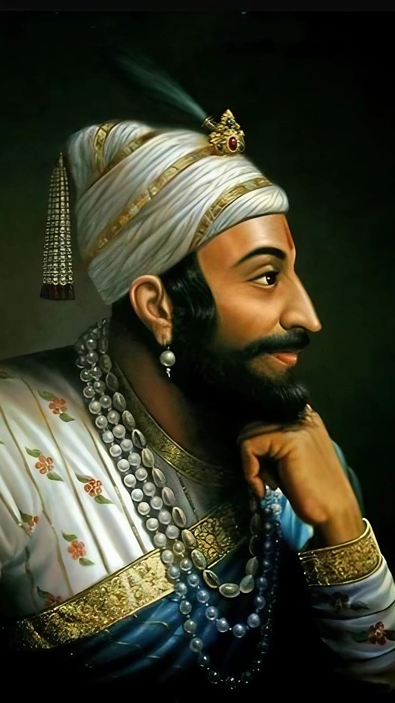
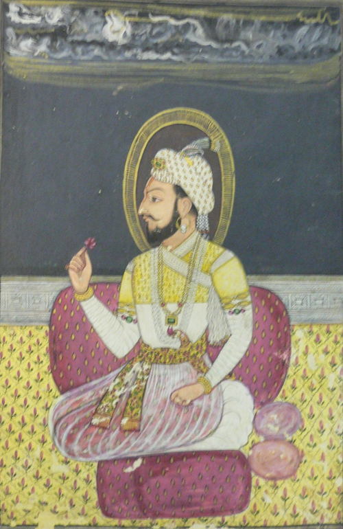

Chhatrapati Sambhaji Maharaj (14 May 1657 – 11 March 1689), also known as Shambhuraje, ruled from
1681 to 1689 as the second king (Chhatrapati) of the Maratha Empire,
a prominent state in early modern India. He was the eldest son of Shivaji Maharaj,
the founder of the Maratha Empire.
At the age of nine, Sambhaji was taken as a political hostage of
the Mughal Empire, to guarantee his father's compliance with the treaty
of Purandar. He later accompanied his father to Agra where both were placed
under house arrest by the Mughal Emperor Aurangzeb; they subsequently escaped.
He was later confined by his father at Panhala Fort, with some theories
suggesting that it was due to his addiction to "sensual pleasures" or
for violating a Brahmin woman.
[2] He subsequently defected to the Mughal Empire and served under
Diler Khan in the Battle of Bhupalgarh against his father.
He ascended the throne following his father's death,
with his rule being largely shaped by the ongoing wars between the Marathas
and the Mughal Empire, as well as other neighbouring powers
such as the Siddi of Janjira,the Wadiyars of
Mysore and the Portuguese Empire in Goa.
Chhatrapati Sambhaji Maharaj – Birth and Early Life

Chhatrapati sambhaji maharaj was born on May 14, 1657, at Purandar Fort, near Pune, in Maharashtra, India.
He was the eldest son of Shivaji Maharaj, the founder of the Maratha Empire, and his first wife,
Saibai Nimbalkar. Every year on 14 May India observed his birthday as Chhatrapati Sambhaji Maharaj Jayanti.
Sambhaji’s early years were marked by a combination of royal privilege and rigorous training. His mother, Saibai, passed away when he was just two years old, which deeply affected his childhood.
At the age of nine, Sambhaji was sent to live as a political hostage at the Mughal court of Emperor Aurangzeb as part of a peace treaty of Purandar.